Our test team at Runner’s World has one job—pile miles onto the newest gear and tell you what’s truly worth your hard-earned cash. This year, we found not only shoes to get you through any training run but also incredibly soft underwear, quarter tights with serious cargo capacity, and revolutionary new headphones that boost your safety. These products passed our tests and are the gear we continue to use nearly every time we head out the door. You’re sure to find your favorite item here, too.
Running Tech
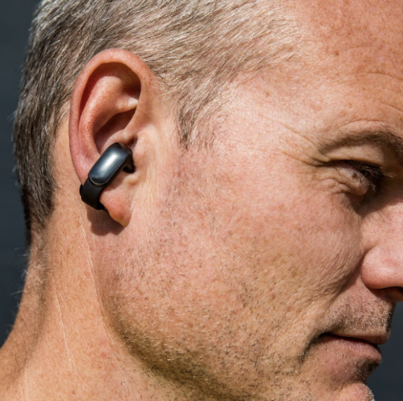
Bose Ultra Open Earbuds
Now 17% Off
Shokz have been atop our list of headphone recommendations for years because they leave your ears open and help keep you safer when you’re running outdoors. A crop of competitors have arisen, however, that use small speakers instead of bone conduction. The result is better sound quality. Top among those is the Ultra Open Earbuds, which clamp onto your ear like one of those 1980s slap bracelets. In our tests, we found the earbuds to be extremely comfortable on runs up to 20 miles and are easier for those of us who wear glasses because you don’t have to deal with ear hooks. For music listeners, turn on the Immersive Audio setting, which makes it sound like you’re in a larger room. I turned it off when listening to audio books, because the effect was too strange on spoken word audio. The batteries give you up to 7 hours of run time, and the case delivers another 20 hours of charge.
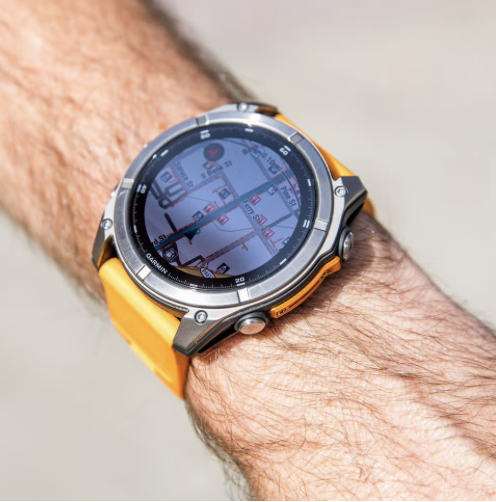
Garmin Fenix 8
The Fenix has long been a favorite watch because it’s built like a tank, the big display is easy to read, it has the most robust navigation features of any running watch, and the battery can go a week or two between charges. Now, it has even more modern capabilities that make it your one watch to rule all. The most obvious update is the AMOLED display, which is a touchscreen much like you’ll find on an Apple Watch or your phone. It’s bright, vivid, and allows for more detailed watch faces. Garmin also added a built-in speaker and microphone, so you can take calls without headphones or needing to pull out your phone. Also, the 8 adds dynamic routing to navigation—the watch gives you turn-by-turn directions and can automatically update the directions if you veer off course—so it’s almost impossible to get lost.
If the 51mm watch is too big (and too expensive), it comes in two smaller sizes as well as a Fenix E, which strips back some of the new features and costs $800. You can also get the Fenix 8 with a solar-charging screen to extend the battery life.—J.D.
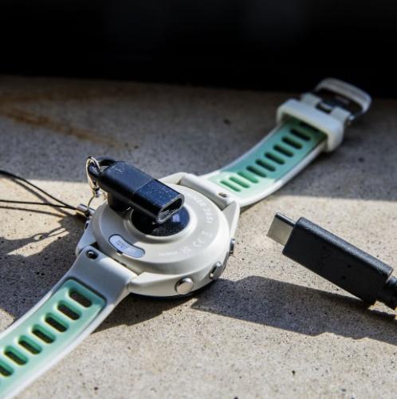
Garmin GPS Watch Adapter
Now 10% Off
This handy little dongle lets you use a USB-C charging cable, like the one that comes with your phone, to charge your Garmin Forerunner or Fenix GPS watch. Stick one on your keyring and you’re never without your watch’s charging cable ever again. —J.D.
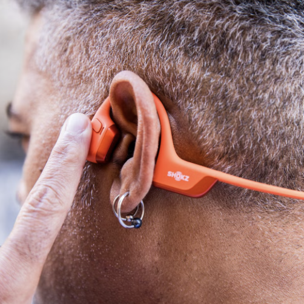
SHOKZ OpenRun Pro 2
Our favorite bone-conduction headphones got a boost in audio quality this year, but that comes with a little trickery. Shokz calls the tech “dual pitch.” What that means is they scaled back some of the vibrations of the bone conduction and now use a small speaker positioned outside your ear. The result is louder, richer audio. If you crank the volume, however, you reduce your ability to hear ambient noise more so than the earlier versions. So, if safety is your priority, use the volume buttons judiciously. —J.D.
Running Wear
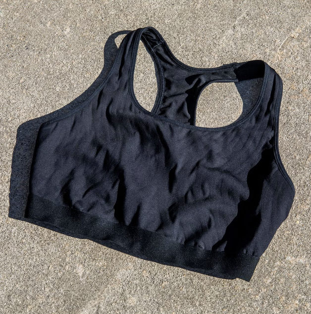
Adidas Techfit Medium Control Support Bra
Now 30% Off
I normally don’t run in medium support sports bras because they usually do not offer enough support, but the Adidas Techfit Medium Control Support Bra shocked me. It was so great that I wore it to run the Boston Marathon. As I crested Heartbreak Hill, the only thing I felt was euphoria for conquering it, and not the pain and agony of an ill-fitting sports bra. It held me in enough and had minimal bounce—and there was no screaming pain from chafing when I jumped in a hot shower post-race. If you’ve ever had that feeling, you know how horrific it is! It’s become my go-to sports bra for long runs and I honestly think I would consider it high support because of how secure I feel while wearing it.I normally don’t run in medium support sports bras because they usually do not offer enough support, but the Adidas Techfit Medium Control Support Bra shocked me. It was so great that I wore it to run the Boston Marathon. As I crested Heartbreak Hill, the only thing I felt was euphoria for conquering it, and not the pain and agony of an ill-fitting sports bra. It held me in enough and had minimal bounce—and there was no screaming pain from chafing when I jumped in a hot shower post-race. If you’ve ever had that feeling, you know how horrific it is! It’s become my go-to sports bra for long runs and I honestly think I would consider it high support because of how secure I feel while wearing it. —Aly Ellis
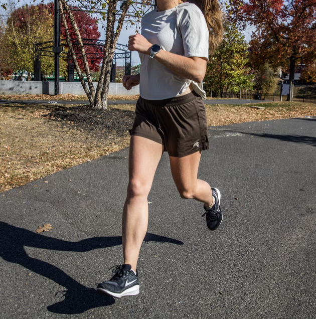
Tracksmith Women’s Session Shorts
The Session Shorts have gotten a remix. Tracksmith gave the popular bottoms an overhaul, adding more pockets—three interior drop-in type pockets on the rear—and positioning the girth of the zippered right thigh pocket to the back instead of the front. The latter is a much welcomed difference; whenever I put items in the previous model’s zipper pocket, I always felt them hit the front of my thigh as I ran. Because you can carry more, Tracksmith added an internal drawcord (you no longer have to rely on an elastic waistband to keep your shorts from sliding down). Lastly, the new liner and band feel silky smooth. One thing to note is that the shorts run bigger than the older version, so you may want to size down. The drawcord’s holes could also be spaced out more—tightening my knot caused the band to bunch up. —Amanda Furrer
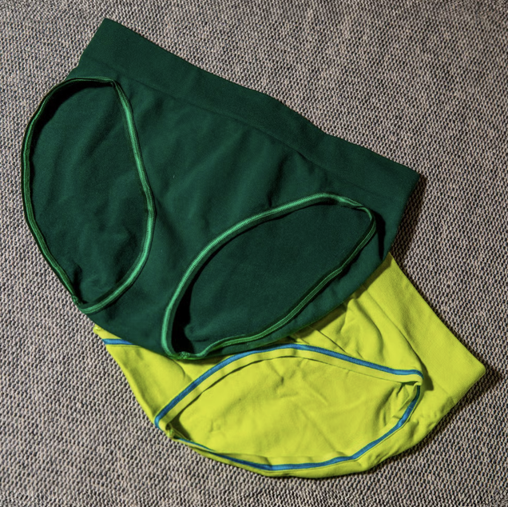
Paradis Sport Women's Underwear
There’s an ongoing debate amongst the women on staff at RW, whether to run with underwear or go commando. Only recently I’ve learned that, for some runners, underwear is a necessity. Sewn-in liners don’t always cut it for those who need a protective layer that fits like a second skin due to friction. Even leggings and bike shorts have seams that can cause discomfort. Paradis Sport offers bikinis and thongs specifically for athletes who wear women’s underwear. The brand has a plant-based natural fiber line and a seamless line. The bottoms are tag-less and have a wide waistband to prevent rolling. The material is also incredibly soft.—A.F.
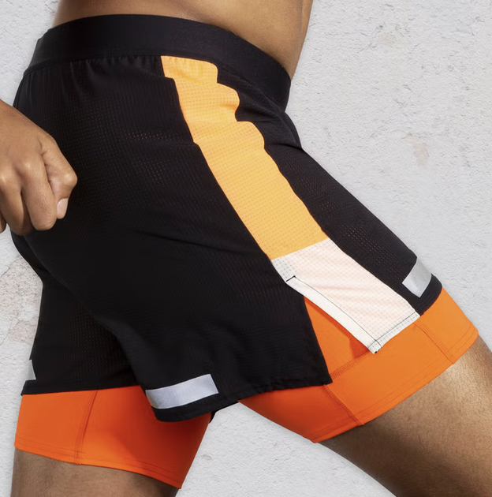
Brooks Run Men's Visible 5" 2in1 Short 2.0
The Run Visible are my go-to 2-in-1 shorts for running at night or early morning. Last year’s pair had a bright, lime-colored lining and some reflective details, but this year’s turned up the brightness even more. The lining is construction-zone orange with bright stripes down the sides, and reflective accents on the front and back of the leg. No doubt, cars and people see me coming. The lining has a phone pocket on the right leg, so there’s no bounce. A small zip pocket on the right hip holds my keys and I hardly notice them. I like the fact that there are only two pockets, as it makes these streamlined. But, I want more pockets when I need to carry gels, so I don’t wear them for my Saturday long run. —Danny Perez
Foot Wear
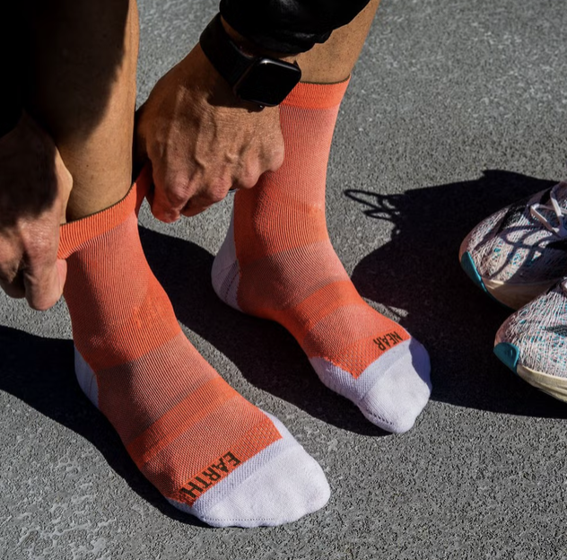
Near Earth The Race Day Socks
Near Earth is a small, German sock maker that only builds socks for runners. As such, the anatomical-fit socks are designed for performance. They’re exceptionally thin and light, but give you a good interface with your racing shoes. The standard race day sock comes in a crew or quarter length, but this version made from nylon waste falls somewhere in between—I wish it was slightly longer, to be honest. —J.D.
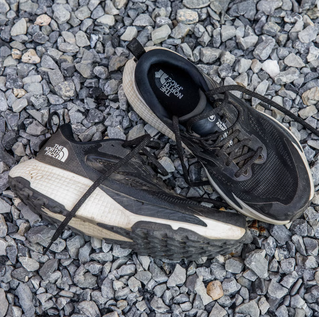
The North Face AltaMesa 500
The Altamesa 500 is the upgrade I wish Hoka would’ve made to the Challenger ATR. I love that it has the same Dream midsole foam as the Summit Vectiv Pro 2, which I wore to a 100-mile PR at Western States 100. As I recover from a long season of racing, this comfort-first trail shoe is ready to take on whatever adventures I go on. The roomy platform also makes the softer cushioning feel more stable, even on technical sections of the Appalachian Trail. The SurfaceCTRL outsole is comfortable on pavement, but has sticky 4mm lugs for solid traction in most trail conditions. It feels like a softer version of the Vectiv Enduris, which was chosen as part of our Gear of the Year in 2021. It’s a great value, too. As we see shoe prices regularly pushing $200 or more, the Altamesa comes in at $155.—P.H.H.
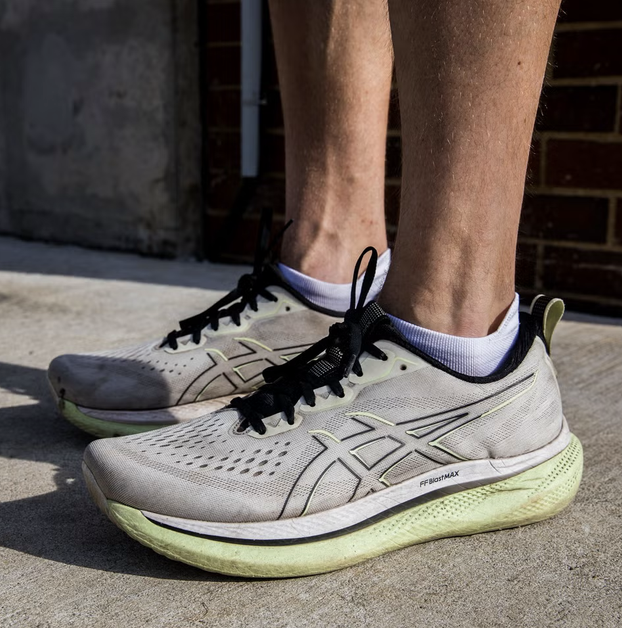
Asics GlideRide Max
Everything about this shoe feels premium and well-made. When you slip your foot in, it just feels good. The sockliner is soft. The upper cradles your foot. The heel collar is plush; running easy miles feels almost therapeutic. In the age of (sometimes overbuilt) super trainers, the GlideRide doesn’t feel clunky or overly tall. The foam is soft but you don’t sink into it.
If I’m packing for a weekend trip, and I only have room for one pair of shoes in my carry-on luggage, I prioritize a trainer that’s versatile and reliable. Over the summer, the GlideRide was my shoe of choice on a work trip to the Olympic Track and Field Trials in Eugene, Oregon. They came back stained with dirt from the wood-chip paths on Pre’s Trail, but they served their purpose. Long run? Done. Tempo at 6:00 pace? No problem. —T.K.
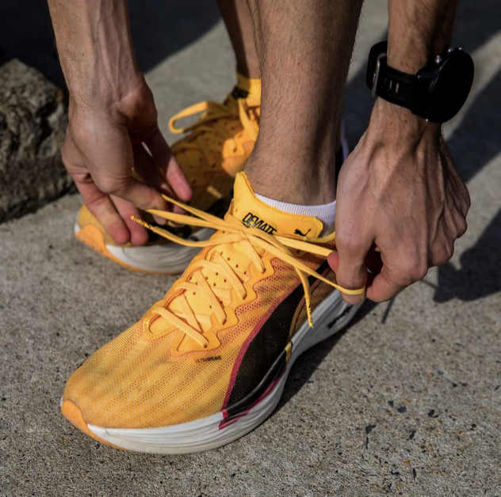
Puma Deviate Elite 3
Puma’s top-tier marathon racing shoe may just be one of the best super shoes you can buy right now. Fiona O’Keeffe and Dakotah Lindwurm wore it to claim spots on the U.S. Olympic marathon team, and our testers loved the soft, lively experience the new foam platform delivered. Much of that comes by way of a “cut and buff” construction process. Rather than compressing the foam in more traditional ways, Puma blows a sheet of foam, then shapes it through various methods—some cutting by hand, some machine-shaping—and slightly recompresses the material. It’s a process similar to how Adidas’s $500 Adizero Adios Pro Evo 1 was made. The result is a less dense foam which maintains cushioning but is lighter weight. —J.D
Can't find the right shoes?
Sign up to get our top choices for running gear.
By signing up, I agree to the Terms of Use (including the dispute resolution procedures ) and have reviewed the Privacy Notice.